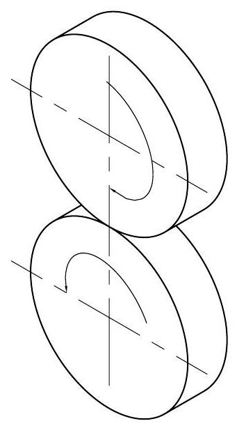
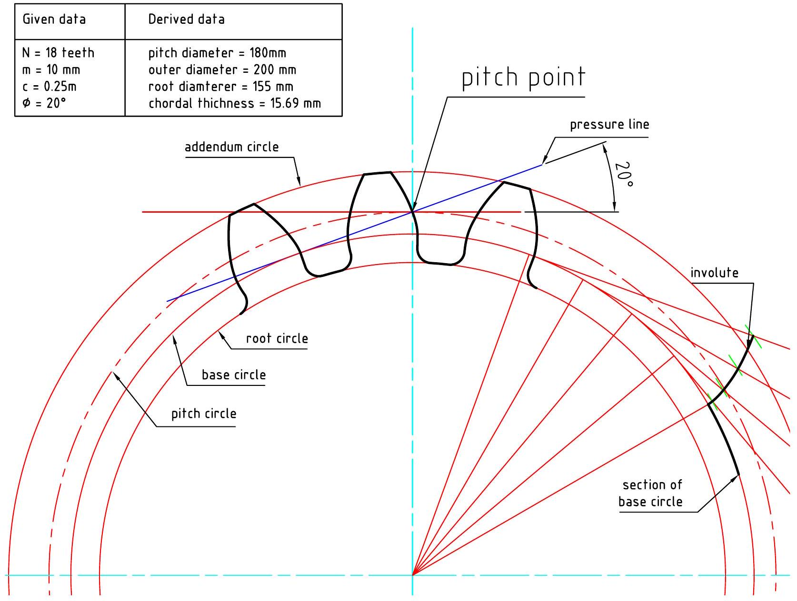
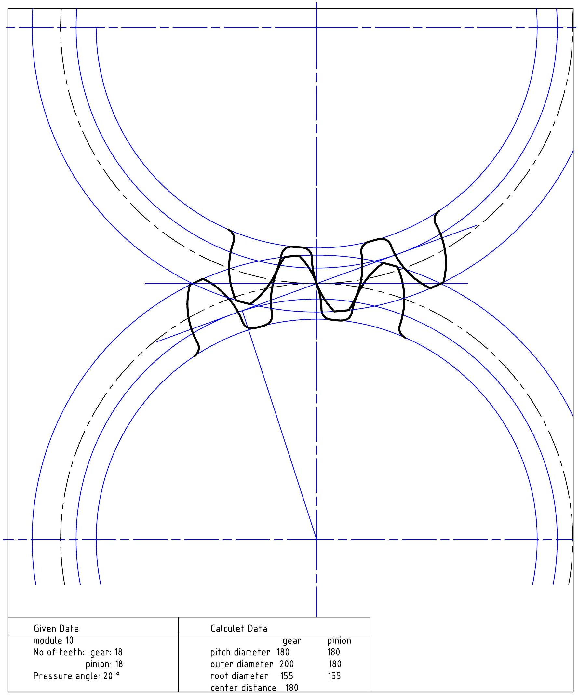

Chapter 6
Gear Teeth Profiles
6.1 Introduction
Gears are machine components used to transmit motion or power from one machine part to another. They are the most common power transmitting components due to the following reasons:
- They provide a positive drive
- They provide a constant transmission ratio
- Compactness
- Ease of production
- Allow interchangeability
Gears may be classified according to the position of the shafts they connect:
- Parallel axis shafts - spur gears, helical gears, herringbone gears
- intersecting shafts - bevel gears, hypoid gears, worm and wheel.
6.1.1 Spur Gears
Spur gears have their teeth cut parallel to the axis of the gear. If two cylinders are positioned as shown in figure 6.1 and some pressure applied between them so as to maintain contact, then any rotating motion in one cylinder will be transmitted to the other by friction. However, a slight loading applied to the driven cylinder will cause it to slip. To overcome this slipping, matching teeth are cut in both cylinders transforming them into a pair of meshing gear wheels.
Figure 6.1: Gear teeth nomenclature
Involute Gear Terminology
The most common tooth form for the gear tooth flank is the involute, and when it is made in this form, the gears are known as involute gears.
- Pitch Circle Pitch Circle is an imaginary circle corresponding to the circumference of the friction cylinders from which the gear is derived. Its diameter is designated as D . Given the module, m and the number of teeth on a gear wheel, N , the pitch diameter is obtained by the relation:
$$D=m \times N$$
- Base circle Base circle the imaginary circle from which the involute profile is developed.
- Circular pitch, $\mathbf{p}$ Circular pitch, $\mathbf{p}$ is the distance measured along the pitch circle from a point on one tooth to a corresponding point on the adjacent tooth. It includes one tooth and one space.
$$p=\pi \frac{D}{N}$$where N is the number of teeth on the gear
- Module, $\mathbf{m}$ Module, $\mathbf{m}$ is the pitch diameter in mm divided by the number of teeth on the gear wheel.
$$m=\frac{D}{N}$$
- Diametral pitch, $\mathbf{P}$ Diametral pitch, $\mathbf{P}$ is the ratio of the number of teeth divided by the pitch diameter in inches
$$P=\frac{N}{D}$$
- Chordal thickness, t Chordal thickness, t is the thickness of a tooth measured along a chord of the pitch circle
$$t=D \sin \left(\frac{90^{\circ}}{N}\right)$$
- Addendum, a Addendum, a is the radial distance from the pitch circle to the tip of the tooth.
- Dedendum, $\mathbf{b}$ Dedendum, $\mathbf{b}$ is the radial distance from the pitch circle to the root of the gear tooth.
$$b=a+c$$
- Pressure angle $\phi$ Pressure angle $\phi$ is the angle that determines the direction of pressure between contacting gear teeth. It also determines the size of the base circle.
- Clearance, $\mathbf{c}$ Clearance, $\mathbf{c}$ is the radial distance between the tip of a tooth and the root of a mating tooth space.
- Center Distance, C Center Distance, C The distance between the centers of two mating gears.
$$C=\frac{D_{g}+D_{p}}{2}$$The subscripts $g$ and $p$ refer to the gear and pinion respectively.
Figure 6.2: Gear teeth nomenclature
Metric gear specification usually give the number of teeth, the module and the pressure angle. Imperial gear specification usually give the number of teeth, the diametral pitch and the pressure angle.
The pitch circle is always drawn in thin long chain line because it is a center line. It is common practice to show two teeth of one wheel meshing with three teeth of the other wheel, the remainder of both wheels being left in blank outline only. Other relevant data should be given in tabular form.
6.1.2 To Draw an Involute Gear Tooth
- Draw the vertical center line of the gears (This passes through the centers of both gears)
- Draw the horizontal line through the pitch point (a distance $\frac{D}{2}$ from the center of the gear)
- Draw the line of action (pressure line) through the pitch point at an angle $\phi$ to the horizontal
- Draw the base circle tangential to the pressure line. Draw the pitch circle. Calculate the addendum, dedendum and draw the addendum circle and the root circle
- Set out and draw the involute on the base circle.
- Copy this involute profile on to a tracing paper including a section of the base circle to aid in correct aligning of the tracing. Set the tracing with the gear profile passing through the pitch point and running from the base circle to the addendum circle.
- From the pitch point step off along the pitch circle, the chordal thickness of the tooth. Turn the tracing over and draw the other half of the tooth profile. Join the profile from the base circle to the root circle using radial lines and include a fillet of radius $0.1 p$ to round off the corner between the tooth flank and the dedendum circle. Line in the Tip of the tooth along the addendum circle and the root of the tooth space along the dedendum circle to complete the tooth.
- Step off the chordal thickness and draw three more teeth.
- Repeat the procedure to the mating gear and draw at least two more teeth.
Figure 6.3 shows the completed gear teeth.
Figure 6.3: Gear teeth drawing
6.1.3 Fillet Construction
- Calculate the fillet radius (0.1p).
- Draw radial lines connecting the involute profile at the base. With center at the point of intersection of the radial line and the root circle and with the fillet radius ( r ), strike arcs A and B . With centers at A and B , and radius r , strike arcs to obtain the center of the fillet arc.
- Draw the fillet arc using a visible line, Figure 6.4 .
Figure 6.4: Construction of the fillet arc
6.1.4 To draw the teeth of a standard gear by approximate arc method
- Lay off the pitch circle, the root circle and the addendum circle
- Starting with the pitch point, divide the pitch circle into distances equal to the circular thickness of the tooth
- Draw the pressure line through the pitch point
- Draw the base circle, tangential to the pressure line.
- With the compass set to a radius equal to the distance from the pitch point to the end of the pressure line on the base circle (radius of curvature), strike arcs through the division points on the pitch circle, with the center on the base circle.
- Darken the arcs for the tops of the teeth and bottom of the spaces and add tooth fillets to complete the gear teeth as shown in figure 6.5.
Figure 6.5: Gear teeth drawing by approximate arc method
Figure 6.6: Meshing pair of gears